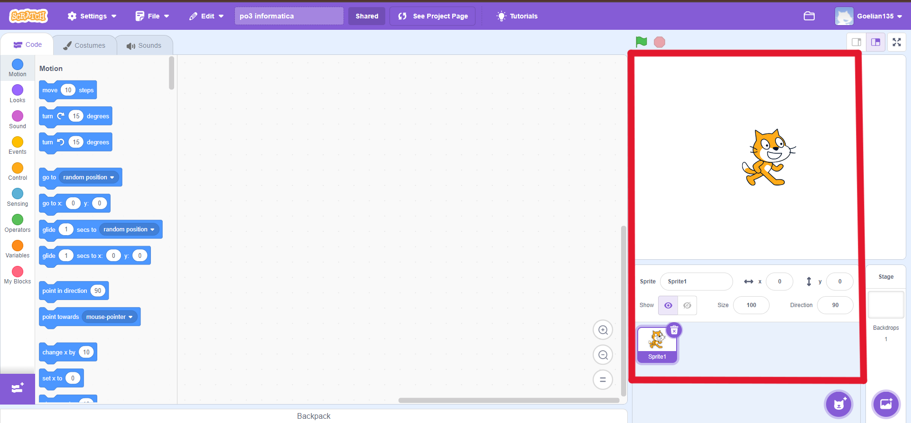
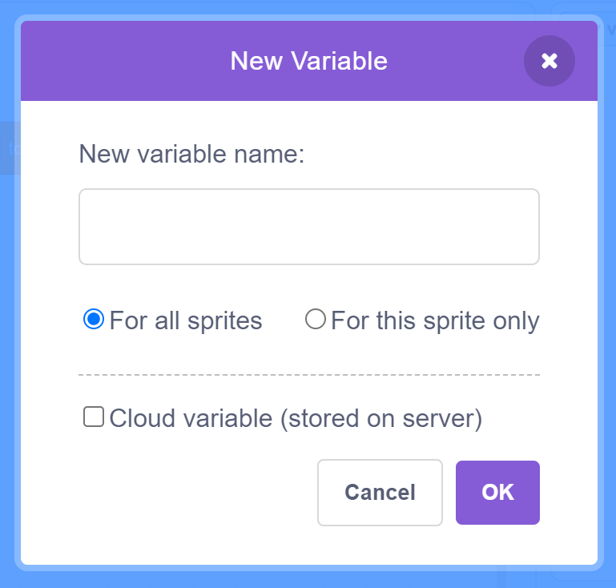

Welkom student,
Op deze website ga je wat basis kennis van Scratch opdoen zodat jij je eerste projecten in Scratch kan gaan maken.
De webiste is opgedeeld in 3 pagina's.
Op de eerste ga je de eerste dingetjes van Scratch leren waarna je je 'sprite' kan laten bewegen,
hem acties kan laten herhalen en je programma kan laten starten door op het groene vlaggetje te drukken.
Op de tweede pagina ga je leren hoe je zelf gemaakte variablen kan gebruiken en toepassen.
Op de derde pagina ga je leren hoe je je sprites en achtergronden mooier kan maken waardoor jouw spel nog beter word.

Een nieuw project in Scratch zonder code
Binnen het rode vierkant bevinden zich je sprites
/
Het motion menu in Scratch
The basics
In 'The basics' ga je leren hoe je je eerste stapjes in het codeeren in Scratch zet.
Je gaat leren werken met 3 kopjes:
Motion
Events
Control
Hiermee ga je leren hoe je je sprite kan laten bewegen,
hoe je je programma aan kan zetten en hoe je acties kan laten herhalen.
Motion
In het kopje motion kan je alle blokjes vinden die jouw sprite kunnen laten bewegen.
Zo heb je bijvoorbeeld: 'move ... steps', 'go to ... position' of 'glide in ... sec naar ...'.
Move ... steps
Met het blokje move ... steps kan je je sprite met een aantal stapjes op de x-as (de horizontale as) laten bewegen.
Maak je er move 10 steps van en activeer je het blokje dan, dan zal je sprite 10 stapjes naar rechts zetten.
Als je je sprite naar links wilt laten gaan moet je het getal op de 3 puntjes negatief maken.
Bijvoorbeeld move -10 steps. Je sprite zal dan 10 stapjes naar links doen.
Go to ... position
Met dit blokje kan je je sprite naar een specifieke locatie laten gaan.
Deze positie kan ook worden gezet op random waardoor de sprite naar een random x en y positie zal bewegen.
Ook kan je dit blokje zetten op dat je sprite zal gaan naar waar je muis zich bevind.
Zet je zo een soort blokje in een herhaal blokje dan zal je sprite je muis blijven volgen.
Glid in ... sec naar...
Met dit blokje laat je je sprite langzaam bewegen naar een positie.
Zoals je misschien al hebt gemerkt met alle vorige blokjes teleporteert je sprite naar de gegeven locatie.
Met het 'glide to' blokje zal je sprite er heen bewegen in plaats van teleporteren.
Je kan deze beweging zo snel of langzaam maken als je zelf wilt door het aantal seconden dat hij erover moet doen minder of meer te maken.
Ook met dit blokje kan je je sprite naar een vaste positie, een random positie of naar je muis laten gaan.
Events
Dit is het events kopje in Scratch
Onder het kopje events hebben we 2 belangrijke blokjes: "When vlaggetje clicked" en "When 'key' key pressed".
When 'vlaggetje' clicked
Dit blokje laat alle code die eronder staat beginnen wanneer je op het groene vlaggetje drukt.
Dit blokje word vaak gebruikt voor alle code die moet beginnen wanneer je spelletje begint.
Let op: je drukt in je spelletje eigenlijk alleen maar op het vlaggetje als je het spel begint,
dus voeg geen code toe die vereist dat je meerdere malen op het vlaggetje moet drukken.
When 'key' key pressed
Dit blokje kun je aanpassen tot alle toetsen op je toetsenbord.
Dit blokje doet hetzelfde als het vorige blokje, maar dan wanneer de specifieke toets op je toetsenbord word ingetikt.
Zo kun je bijvoorbeeld met WASD je poppetje alle kanten op laten bewegen of bedenk zelf maar wat voor gekkigheid je hiermee kan uithalen.
Je hebt onder events ook nog de "broadcast" en "when I receive message" blokjes.
Deze zijn heel nuttig om codes elkaar te kunnen laten activeren, maar dat mag je zelf uitvinden. :)
Control
Dit is het kopje control in Scratch.
Onder dit kopje vind je allemaal blokjes waarmee je je code kan laten herhalen
en knopjes die op voorwaardes checken en dan hun code laten werken.
We gaan het hier alleen maar hebben over de herhaal blokjes, maar wil je de andere knopjes ook gebruiken,
voel je dan vooral vrij om daar zelf mee te gaan experimenteren.
Repeat en forever
De blokjes repeat and forever doen bijna hetzelfde: het repeat blokje laat je code die binnen het blokje staat
zo vaak herhalen als jij zelf hebt ingevoerd. Het forever blokje laat je code voor altijd herhalen.
Je kan dit bijvoorbeeld gebruiken als je een voorwaarde het hele spel wilt blijven checken
(hier heb je dus ook de blokjes nodig die voorwaardes checken ;)).
Variabelen
Hier ga je leren wat variabelen zijn en hoe je ze kan gebruiken in scratch. Variabelen zijn een soort doosjes waarin een waarde zit. Je kan zelf een waarde en een naam geven aan een variabele,
hierdoor kan je makkelijk data opslaan. Variabelen zijn heel handig als je iets bij wilt houden zoals een score.
Het variables menu in Scratch

Variabel aanmaken
Hoe maak je een variabel
Als eerst zie je een knop "Make a variable" als je hier op klikt krijg je een menu te zien. In dit menu kan je een variable maken,
dat doe je door een naam te geven, te selecteren of alle sprites of maar 1 sprite de variable kan gebruiken en of de variabel wordt
opgeslagen op een server.
Set en change blokjes
Als je een variabel hebt gemaakt kan je deze gebruiken in je code. Je kan de variabel bijvoorbeeld gebruiken om een score bij te houden.
Je kan een variabel een waarde geven door een blokje "set ... to ..." te gebruiken. Dat blokje werkt door eerst het juiste variabel te
selecteren en als tweede moet je een getal invullen. Je kan ook de waarde van een variabel veranderen door een blokje "change ... by ..."
te gebruiken. Dit blokje werkt hetzelfde als het blokje "set ... to ..." alleen verander je de waarde van de variabel met een getal,
dit kan een positief getal zijn om dat er bij op te tellen, maar je kan ook een negatief getal gebruiken om er van af te halen.
Variabel op het scherm laten zien
Show en hide blokjes
Je kan ook een variabel laten zien op het scherm door een blokje "show" te gebruiken. Dit blokje zorgt ervoor dat de variabel op het scherm
wordt weergegeven. Je kan de variabel ook weer verbergen door een blokje "hide" te gebruiken. Dit blokje zorgt ervoor dat de variabel niet
meer op het scherm wordt weergegeven.
Hoe gebruik je een variabel
Als je een variabel hebt gemaakt kan je deze gebruiken in je code. Je kan de variabel bijvoorbeeld gebruiken om een score bij te houden.
Je kan de variabel ook gebruiken om een sprite te laten bewegen. Als je bijvoorbeeld een variabel hebt die de x positie van een sprite bijhoudt
kan je de sprite laten bewegen door de x positie van de sprite te veranderen zoals te zien in de video.
Looks
Hier ga je leren hoe je de looks van je sprites kan veranderen. Je kan bijvoorbeeld de sprite een andere kleur geven, een andere vorm of
een andere grootte geven en je sprite iets laten zeggen.
Het looks menu in Scratch
Sprite die "hallo wereld!" zegt
Een sprite iets laten zeggen
Je kan een sprite iets laten zeggen door een blokje "say ... for ... seconds" te gebruiken. Dit blokje zorgt ervoor dat de sprite iets zegt
voor een bepaalde tijd. Je kan ook een sprite iets laten zeggen voor altijd door een blokje "say ..." te gebruiken. Dit blokje zorgt ervoor
dat de sprite iets zegt totdat je een ander blokje gebruikt om de sprite iets anders te laten zeggen. Je kan ook een sprite iets laten denken
door een blokje "think ... for ... seconds" te gebruiken. Dit blokje werkt hetzelfde als het blokje "say ... for ... seconds" alleen ziet het
er uit alsof de sprite het denkt in plaats van praat.
Kostuum van sprite veranderen
Je kan het kostuum van een sprite veranderen door een blokje "switch costume to ..." te gebruiken. Dit blokje zorgt ervoor dat de sprite
een ander kostuum krijgt. Je kan ook een sprite een ander kostuum geven door een blokje "next costume" te gebruiken. Dit blokje zorgt ervoor
dat de sprite het volgende kostuum krijgt. Ook kan je de achtergrond veranderen door een blokje "switch backdrop to ..." te gebruiken, dit blokje
werkt hetzelfde als het blokje "switch costume to ..." alleen verander je de achtergrond in plaats van de sprite.
Sprite met fisheye effect op stand 250
Grootte en kleur van sprite veranderen
Je kan de grootte van een sprite veranderen door een blokje "set size to ..." te gebruiken. Dit blokje zorgt ervoor dat de sprite een bepaalde
grootte krijgt. Je kan ook de grootte van een sprite veranderen door een blokje "change size by ..." te gebruiken. Dit blokje werkt hetzelfde als
het blokje "set size to ..." alleen verander je de grootte van de sprite met een getal, dit kan een positief getal zijn om de sprite te vergroten,
maar je kan ook een negatief getal gebruiken om de sprite te verkleinen. Je kan de kleur van een sprite veranderen door een blokje "set ... effect
to ..." te gebruiken. Dit blokje zorgt ervoor dat de sprite een bepaalde kleur krijgt met een bepaald effect. Je kan ook de kleur van een sprite veranderen door een blokje
"change ... effect by ..." te gebruiken. Dit blokje werkt hetzelfde als het blokje "set ... effect to ..." alleen verander je de kleur of het effect van de sprite
met een getal, dit kan een positief getal zijn om de kleur of het effect te veranderen, maar je kan ook een negatief getal gebruiken om de kleur of het effect te veranderen.
Het blokje "clear graphic effects" zorgt ervoor dat alle effecten van de sprite worden verwijderd.
Sprite zichtbaar en onzichtbaar maken
Je kan een sprite zichtbaar maken door een blokje "show" te gebruiken. Dit blokje zorgt ervoor dat de sprite zichtbaar wordt.
Je kan de sprite ook weer onzichtbaar maken door een blokje "hide" te gebruiken. Dit blokje zorgt ervoor dat de sprite niet meer zichtbaar is.
Als je meerdere sprites hebt die op de achtergrond staan kan je een sprite naar voren of achter halen door een blokje "go to front layer" of
"go to back layer" te gebruiken. Je kan ook een sprite naar voren of achter halen door het blokje "go forward/backward ... layers" te gebruiken.
Op deze paginna ga je wat leuks leren over ons, de makers van deze prachtige website.
Alejandro van Melle
Immigrant
Julian van Kuik
Julian zit in klas 4va op het minkemacollege.
Hij houd van gamen en heeft iets te veel uur (en geld) in Fortnite zitten.
Ward Franssen
Ward zit in klas 4va op het minkemacollege en hij is de maker van de super populaire website
larsvlaar.nl.


{kind=link}
{kind=link}
{kind=link}